Basket
Let's write a program that weaves a basket!
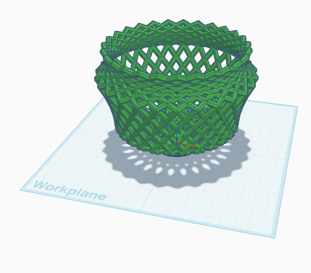
Overview
Instead of drawing a 3D model by hand, you'll write a program that builds one for you. In Tinkercad Codeblocks, each block adds, moves, or changes a shape, and pressing Play runs your program to draw the model. This basket is 27 hexagon rings, each one turned a little more than the last. Placing those by hand would take all period, and one wrong click would show. You'll draw one ring, then let a loop repeat it around a circle, and use a variable to change how many rings there are with one number.
Before you start
You'll need your Tinkercad login. Your design saves automatically.
You've got it when…
- Pressing Play draws a basket: a ring of tilted hexagons on a round base, all one color.
- The hexagons come from one ring block inside a Count with loop, not from copies you placed by hand.
- Changing
frameonce changes how many hexagons the basket has.
Collaboration & AI
Work: On your own. Ask a neighbor for a hand if you're stuck, but build your own basket.
AI — AIAS Level 1, No AI: This lab is about learning the blocks by placing them yourself, so set AI aside this time. What the levels mean.
Create a Codeblocks Project
-
Go to Tinkercad and sign in.
-
Click Create, then Codeblocks.
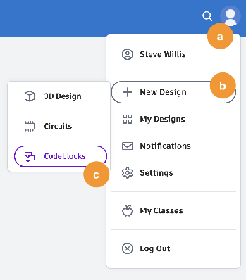
-
Click the random name at the top of the screen and rename your project Basket.
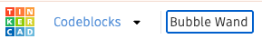
Build One Ring
-
Drag a Torus
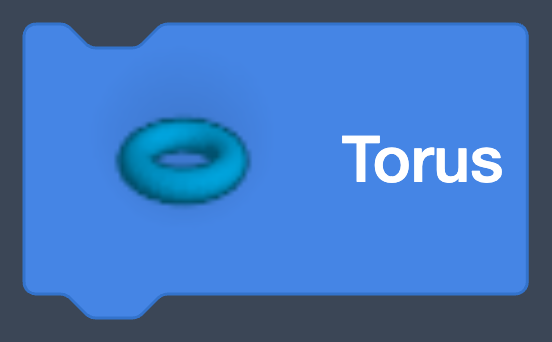
from Shapes into the workspace. A torus is a donut shape. -
Click the arrow on the block to unfold its parameters, the numbers that control the shape. Set Radius to
60, Sides to6, Tube to2, and Steps to6.What the numbers do
Radius is how big the ring is. Sides is how many straight edges it has; 6 turns the donut into a hexagon. Tube is how thick the ring is, and Steps is how smooth the tube is. Any shape would work here; the hexagon just weaves nicely.
-
Click Play .
Your screen should look like this.
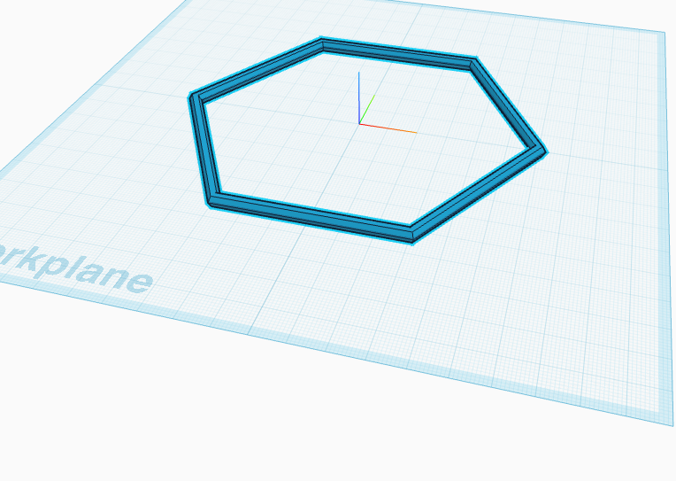
-
Drag a Rotate around block
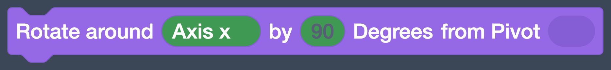
from Modify under the torus. Change Axis x to Axis y and90to50. This tilts the ring.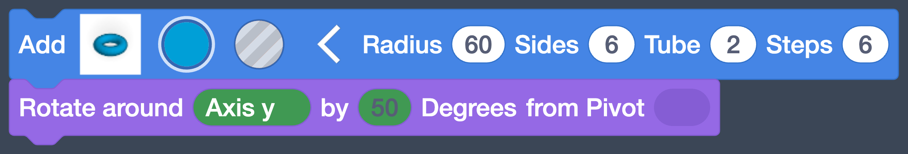
-
Click Play.
Your screen should look like this.
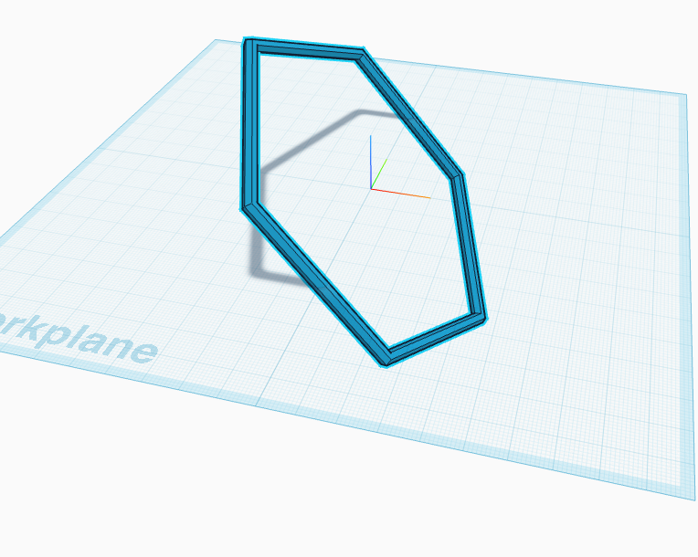
-
Drag a Move block from Modify under the rotate. Set X to
-20and Z to46.5. Leave Y at0.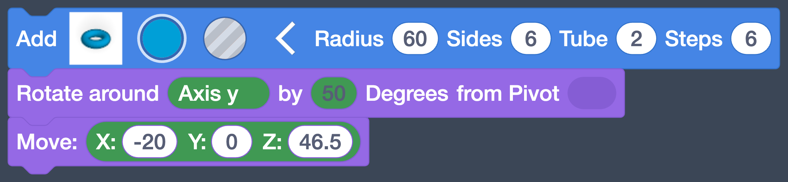
-
Click Play.
Your screen should look like this.
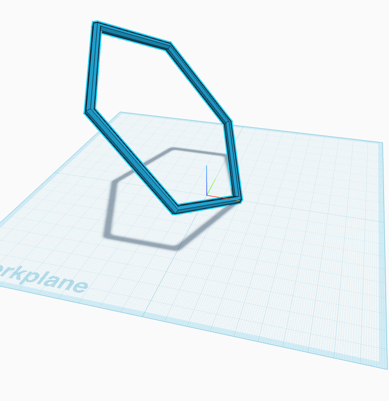
Why those numbers
Z
46.5lifts the ring so its bottom point just touches the workplane. X-20slides it sideways, away from the center. When we spin copies of this ring around the center, that sideways gap is what makes the basket wider or narrower. Try it later.
Give the Count a Name
We're about to make a lot of these rings. A variable stores a number under a name, so you can use the name in your program and change the number in one place.
-
Click Variables and click Create number variable…. Name it
framewith no spaces and click Create. Drag the Set block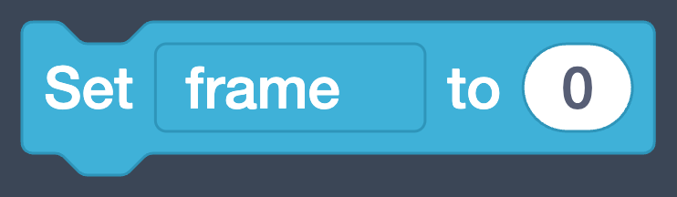
into an empty part of the workspace above your ring blocks, and setframeto27. This is how many ring shapes make up the basket.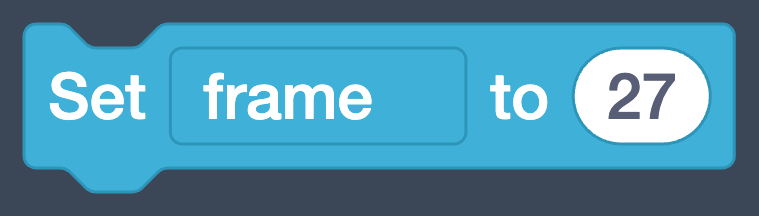
Warning
Variable names can't contain spaces.
frameworks;frame countwon't. -
Create a second variable named
frameRot, and add its Set block under the first one. The dropdown on a Set block picks which variable it sets. Drag a math block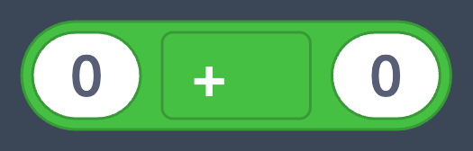
from Math into its slot, click the+and change it to/, type360in the left space, and drag the roundframeblock into the right space.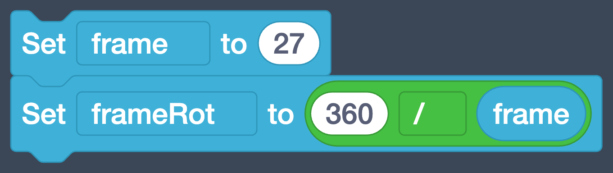
frameRotis how far to turn between one ring and the next. A full circle is 360 degrees, and we're dividing it intoframeequal turns.Order matters for divide
360goes in the left space andframein the right. These two blocks look alike, and they don't compute the same thing: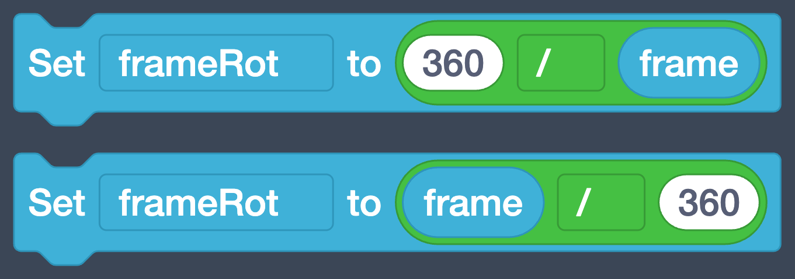
The top one is 360 ÷ 27, about 13 degrees per ring. The bottom one is 27 ÷ 360, a tiny fraction of a degree, and all your rings would pile up in one spot. For
+and*the order doesn't matter; for-and/it always does.
Repeat It Around
A loop repeats a set of blocks for you. Doing this by hand would be tedious, and tedious jobs are what computers are for.
-
Drag a Count with block
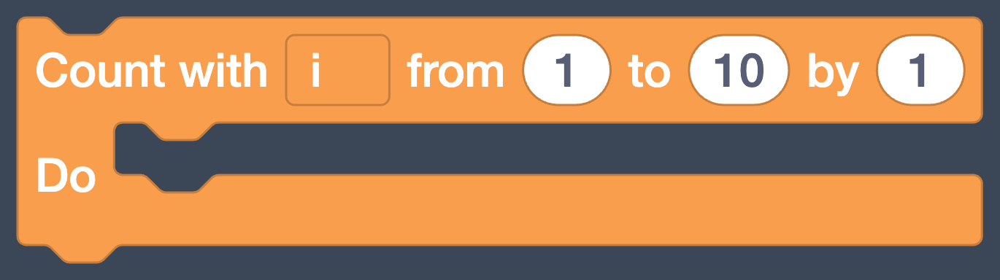
from Control into an empty spot. Drag your ring blocks (the torus, rotate, and move together) into the loop's mouth, the gap after Do. Then snap the loop under Set frameRot.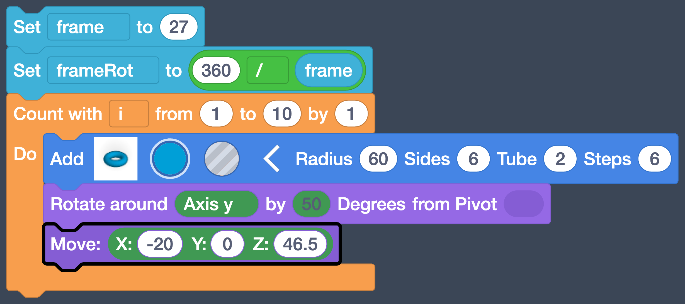
The loop's counter
The loop creates a variable for us named
i. Each time around,iis set to the next number in the from and to range, and we can use it inside the loop. -
Change from
1to0, and drag the roundframeblock onto the to number. Leave by at1. Now the loop counts from 0 up to whateverframeis.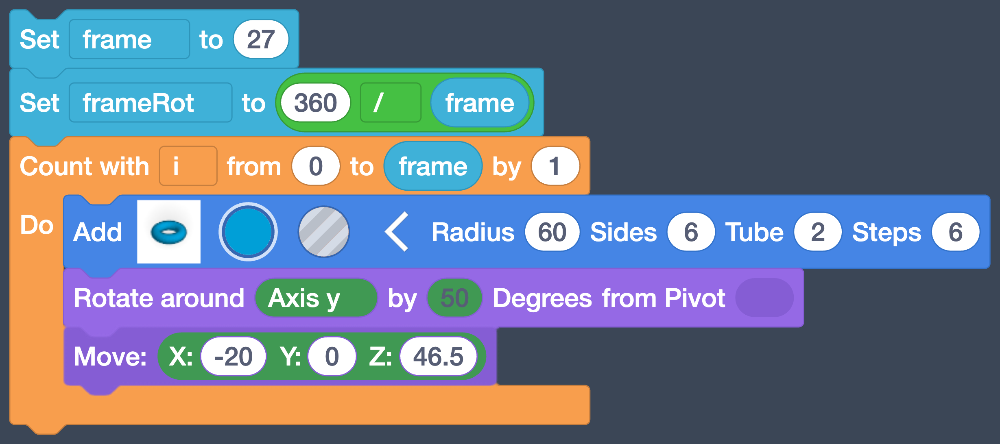
-
Drag a Rotate around block inside the loop, under the Move.
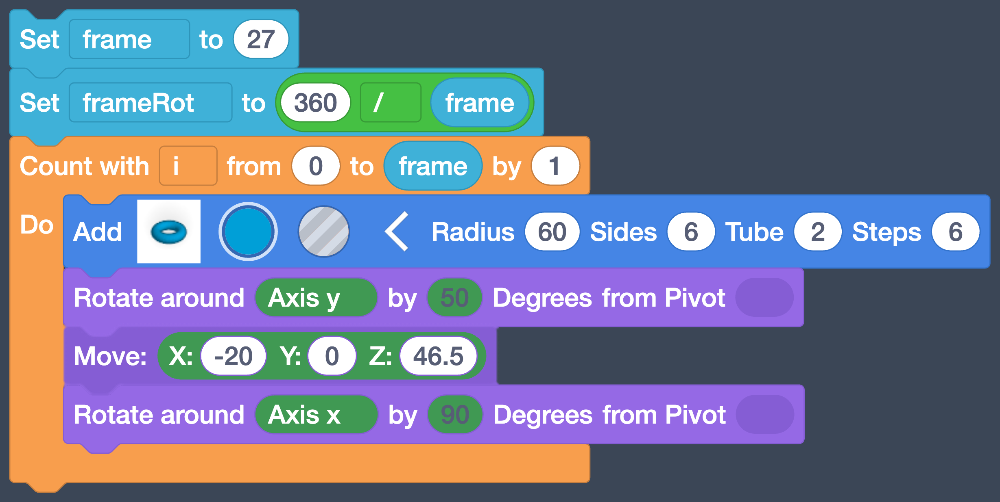
-
Change Axis x to Axis z. Drag a math block onto the by number, drag
iinto its left space andframeRotinto the right, and change the+to*. Finally, drag theX: Y: Z:block from Math onto from Pivot and leave it at0,0,0.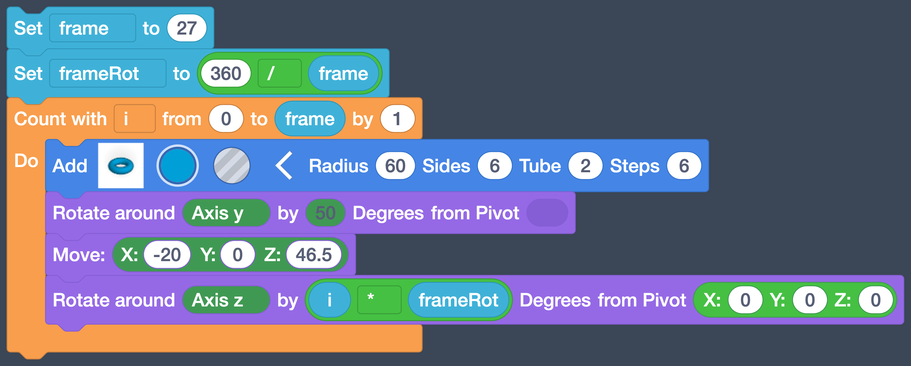
Why the pivot
Without a pivot, Rotate spins a shape around its own center, and the ring would just turn in place. Pivot
0, 0, 0is the center of the workplane, so each ring swings around the middle of the basket instead. -
Click Play.
Your screen should look like this.
Each time through the loop, the program draws one ring, tilts it, slides it, and turns it
i * frameRotdegrees: 0 the first time, then 13, then 26, all the way around. Withframeat27, that's a full circle. -
Change Set frame from
27to12.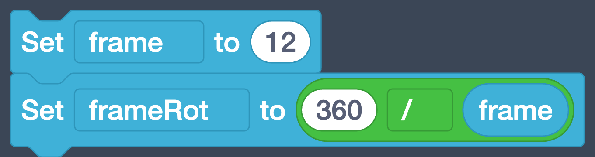
-
Click Play.
Your screen should look like this.
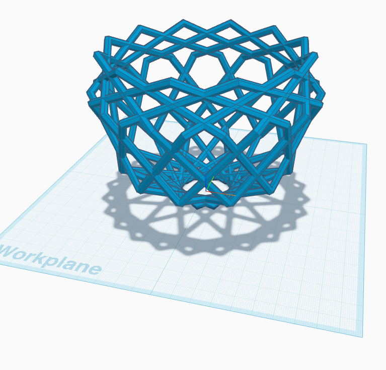
One number, and the whole basket rebuilt.
frameRotchanged too, because it's computed fromframe. -
Change
frameback to27, or pick a number you like better.
Add a Base
A basket needs a bottom, and a flat bottom is easier to 3D print.
-
Drag a Tube
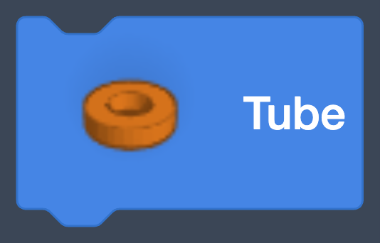
from Shapes under the loop (below its mouth, not inside it). Unfold it and set Radius20, Wall Thickness14.5, H3, Sides24, and edge1. Leave Edge Steps at1.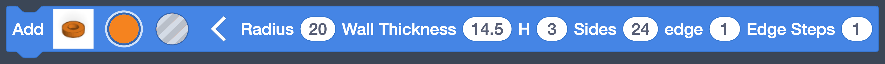
-
Click Play.
Your screen should look like this.
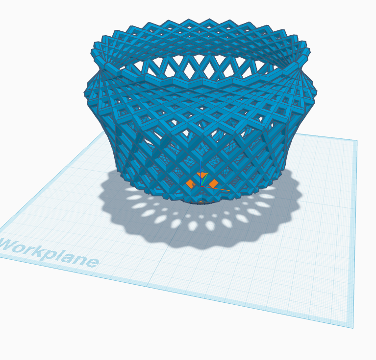
-
Drag a Group Selection from Modify under the tube. Group combines everything above it into one shape. Click the rainbow circle on the block, choose Presets, and pick a color.
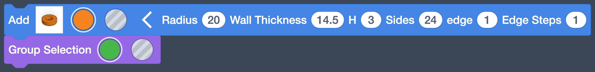
-
Click Play.
Your screen should look like this.
Checkpoint
One ring block, one loop, one basket. Your whole program should look like this.
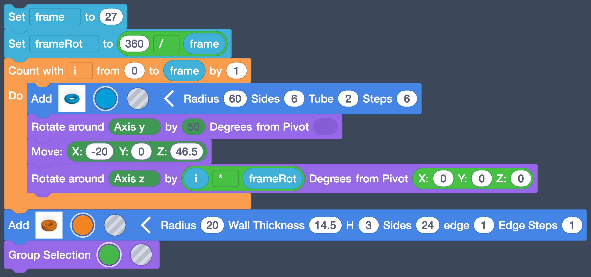
Make it yours
Every number in this program is a knob. Try frame at 40, the tilt
at 30 instead of 50, Sides at 4 or 8, or X at -30. Press
Play after each change and see what it did. If you break it, change
the number back.
Turn It In
- Nothing to upload today. Tinkercad saves your Basket design to your account automatically, and you'll show it on your screen when asked.
Credit: Adapted and updated from Tinkercad's Basket example.
How It's Graded
This lab is worth up to 4 points. One score covers everything you turn in.
| Score | What it looks like |
|---|---|
| 4 — Excellent | Pressing Play draws a complete basket, rings and base, in one color; the rings come from one ring block inside a Count with loop rotated by i * frameRot around pivot 0, 0, 0; and changing frame rebuilds the basket with a different number of rings. |
| 3 — Above Average | A complete basket with a slip or two: the loop's to is a typed number instead of frame, the base didn't get grouped in, or the color change was skipped. |
| 2 — Average | A real gap: the rings pile up in one spot (pivot or frameRot wrong), the base is missing, or the basket is built from copied ring blocks instead of a loop. |
| 1 — Below Average | Only one ring draws, or the program doesn't produce a recognizable basket when Play is pressed. |
| 0 — Failing | No Basket design in your Tinkercad account, or nothing drawn at all. |